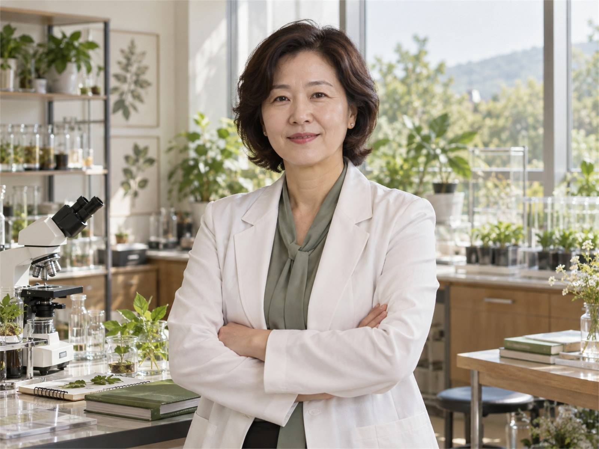

NATURIVE LAB
CEO 인사말
“자연이 빚어낸 에너지를 먹고 자란 아름다움,
그 비밀을 과학의 언어로 밝힙니다.”

기술에 정성을 담는 일
천연 원료는 산지와 기후, 추출 조건에 따라 서로 다른 결과를 만듭니다. 네이처리브랩은 원료 하나의 시간을 세심하게 기록하고, 그 안의 유효한 가능성을 객관적인 데이터로 증명합니다.
글로벌 네트워크의 중심
세계 각지의 식물 연구자와 재배 농가, 고객사를 연결해 지속가능한 원료 공급과 공동 연구를 이어갑니다.
함께 나아가는 길
약속을 지키는 책임감과 열린 소통으로 고객과 오래 성장하겠습니다.
Jiyoon Han, Ph.D.NATURIVE LAB FOUNDER